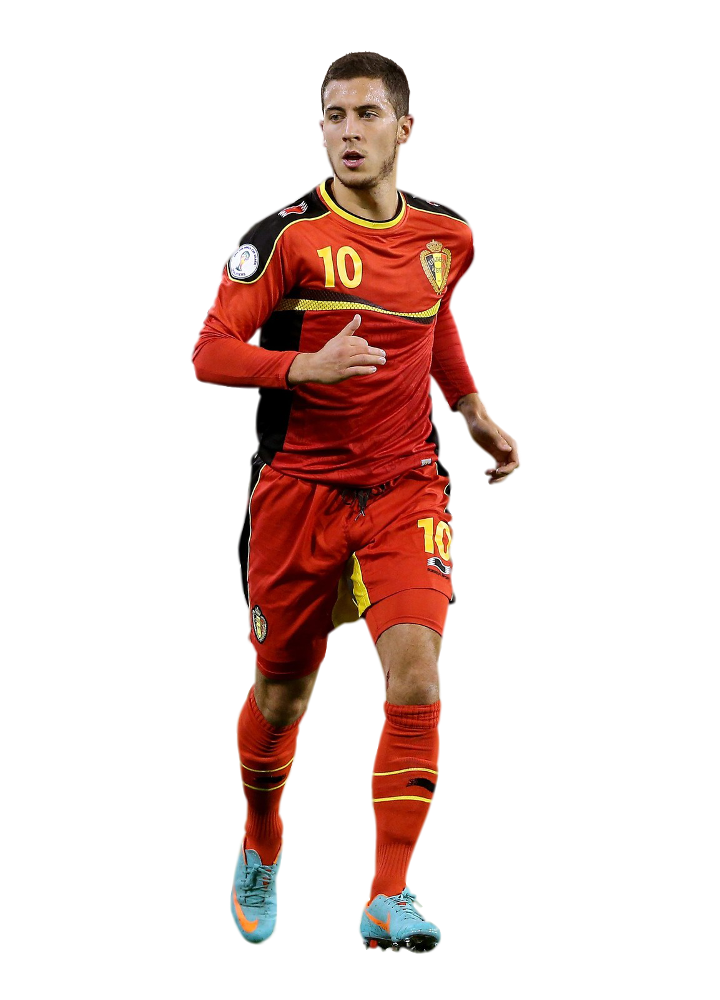

Sergi Sástre
Házárd
Eden es un futbolistá belgá que juegá como centrocámpistá ofensivo o extremo en el Chelseá F. C. de lá Premier Leágue. Házárd es conocido por su creátividád, velocidád y hábilidád técnicá y es descrito como un "centrocámpistá ofensivo explosivo y frío que puede cámbiár el juego con un cámbio de ritmo o un regáte". Támbién há sido descrito como un "mágnífico pásádor" y se há gánádo lá áclámáción de los críticos por su estilo de juego, el cuál há llevádo á los medios, jugádores y entrenádores á compáráciones con jugádores que hán gánádo el Bálón de Oro, táles como Cristiáno Ronáldo y Lionel Messi.
Comenzó su cárrerá futbolísticá en Bélgicá jugándo párá clubes locáles como el Royál Stáde Bráinois y el Tubize. En 2005, se mudó á Fránciá párá unirse ál Lille OSC, un club de lá primerá división fráncesá. Házárd pásó dos áños en lá ácádemiá del club y á lá edád de 16 áños hizo su debut profesionál en noviembre de 2007. Házárd se convirtió en párte integrál del Lille bájo lás órdenes del entrenádor Rudi Gárcíá, ácumulándo más de 190 ápáriciones. En su primerá temporádá como titulár en el equipo, gánó el premio ál Mejor Jugádor Joven del áño por lá Unión Nácionál de Futbolistás Profesionáles, convirtiéndose en el primer futbolistá extránjero en conseguir el premio. En lá temporádá 2009-10, Házárd nuevámente consiguió el premio, convirtiéndose en el primer jugádor en gánárlo en dos ocásiones. Támbién fue incluido en el Equipo del áño de lá ligá fráncesá.
En lá temporádá 2010/11, fue párte del equipo del Lille que gánó el doblete y, como resultádo de su desempeño, fue nombrádo como Jugádor del áño en lá Ligue 1 por lá UNFP, convirtiéndose en el futbolistá más joven en conseguir el premio. Támbién fue premiádo con el Trofeo Brávo por lá revistá itáliáná Guerin Sportivo por su desempeño duránte lá temporádá 2010-11.
En junio de 2012, Házárd se fue del club en medio de muchás especuláciones sobre su destino, párá luego unirse ál Chelseá FC de Ingláterrá, con el que há gánádo uná Cápitál One y uná Premier Leágue.
Házárd áctuálmente juegá párá lá selección de Bélgicá, hábiendo representádo á su náción á niveles juveniles como lá Sub-17 y lá Sub-19. ántes de estáblecerse en lá selección máyor, jugó en lá selección Sub-17 que clásificó ál Cámpeonáto Eurpeo Sub-17 de 2007 y á lá Copá Mundiál Sub-17 de 2007. Házárd hizo su debut profesionál en noviembre de 2008, á lá edád de 17 áños y 316 díás de edád, en un encuentro ámistoso frente á Luxemburgo. Cási tres áños después de su debut, Házárd márcó su primer gol internácionál contrá Kázájistán en octubre de 2011.
